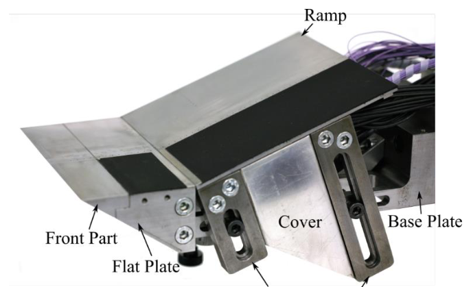
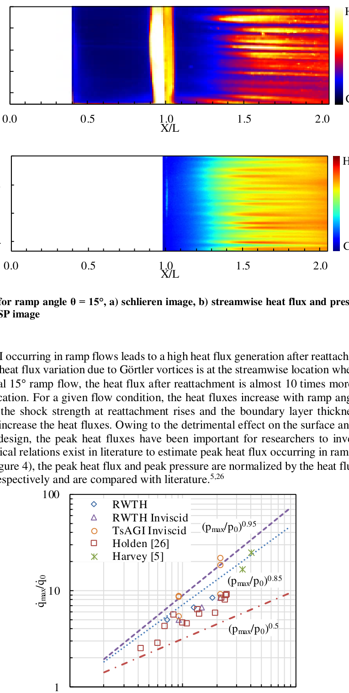
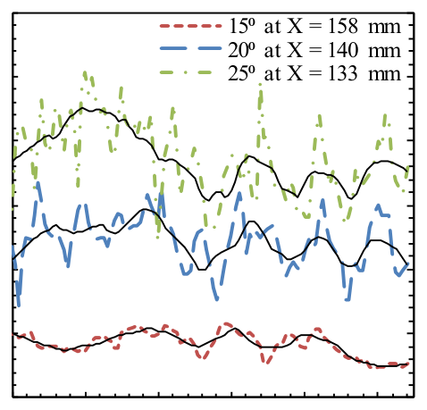
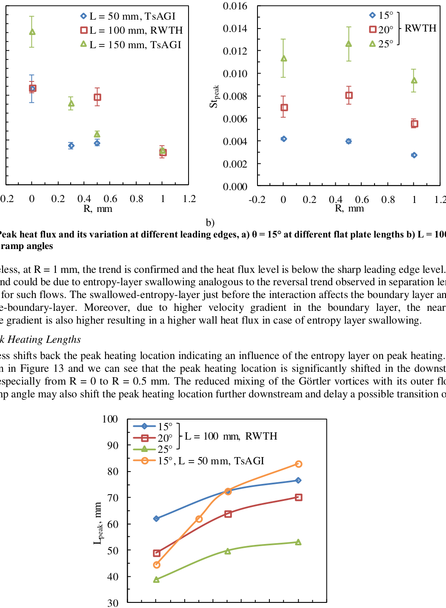

01中文摘要
在马赫8、单位雷诺数4×10⁶ m⁻¹下，于Aachen TH2和TsAGI UT-1M风洞开展斜坡实验，考察前缘半径、平板长度和斜坡角对Görtler涡的影响。斜坡角15°、20°、25°，平板长度50、100、150 mm，前缘半径0–1 mm；以热电偶、热敏漆、压力传感器、纹影和红外成像测量。Görtler涡在峰值热流区最强，展向热流变化可达15%（RWTH）和13%（TsAGI），涡波长约4–6 mm；前缘钝度的熵层削弱Görtler涡，降低峰值热流和展向不均匀性，但峰值热流随半径呈先升后降的反转趋势。
02阅读说明
类型：双风洞实验研究（RWTH Aachen TH2 与 TsAGI UT-1M 对照），辅以文献数据比较与经验标度分析。材料：14页全文、图注清单9项完整；表1试验条件与式(1)已对照PDF第4、7页原页核对。图表可读性：正文对图3–图14的定量描述较完整，但多数曲线图仅给趋势、未列表值；图6的图注在bundle中被正文串入，已按原图注与正文§III.A.4理解。信息完整度较高；无测量不确定度与重复性数据。提取口径为“两设施对照—峰值热流/分离长度—展向与流向热流—钝度效应”，页码为原文印刷页码。 文章类型：期刊
03一句话核心与三句话摘要
M8、Re=4×10^6/m双风洞实验表明，前缘钝度经熵层削弱Görtler涡，反转半径后峰值热流与展向不均匀度下降。
- 钝前缘更接近真实高超飞行器，但钝前缘压缩斜坡的Görtler涡实验数据很少，熵层与Görtler涡相互作用几乎没有资料。 AI概括
- 作者在TH2与UT-1M以M∞=8、Re∞=4×10^6 m^-1测试15°/20°/25°斜坡、50–150 mm平板与0–1 mm前缘半径，用热电偶、TSP、红外、压力与纹影测量，发现Görtler涡在峰值热流区最强，展向热流变化RWTH达15%、TsAGI达13%，波长约3.4–6 mm。 AI概括
- 熵层使条纹图案平滑、峰值热流与展向变化降低、峰值热流位置后移，并在R≈0.5 mm出现峰值热流反转；作者据此认为熵层提高流动稳定性、削弱Görtler涡影响。 原文明确
04核心内容清单
| 要点 | 类型 | 重要性 | 原文依据 | 属性 |
|---|---|---|---|---|
| 研究对象是高超压缩斜坡中由再附区凹面剪切层触发的Görtler涡，关注点从中心线热流转向展向条纹热流。 | 研究动机 | A | 第1–2页 §I | 原文明确 |
| 钝前缘Görtler涡实验数据很少，熵层与Görtler涡相互作用此前无资料，是本文缺口。 | 领域缺口 | A | 第2页 §I | 原文明确 |
| TH2与UT-1M在15°参照工况（L=100/104 mm）热流剖面、条纹图案与Lu/Lsp一致（偏差≤5 mm），可视为等效流动。 | 设施对照 | A | 第4页 §III.A.1，图3 | 原文明确 |
| 15°斜坡再附后热流约为同位置平板热流的10倍，并随斜坡角增大而升高。 | 定量结果 | A | 第5页 §III.A.2 | 原文明确 |
| 峰值热流长度随马赫数增大、随雷诺数减小，并随斜坡角增大向斜坡角点靠近。 | 标度趋势 | A | 第6页 §III.A.3，图5 | 原文明确 |
| Görtler涡在峰值热流区最强，展向热流变化在该区最大；RWTH为±3%（15°）至±15%（25°）。 | 核心现象 | A | 第5、7页 §III.A.2、§III.B.1，图7 | 原文明确 |
| 尖前缘涡波长RWTH散布4–6 mm、平均5.9/5.5/4.9 mm（15°/20°/25°）；TsAGI主波长约5.1 mm，随平板长度给3.4/5.1/5.8 mm。 | 定量结果 | A | 第7–8、12页，图7、图8 | 原文明确 |
| 钝度使条纹平滑、峰值热流与展向变化下降、波长略增，但R=1 mm时涡仍可见。 | 钝度效应 | A | 第10页 §III.C.1，图10、图11 | 原文明确 |
| 峰值热流随R非单调：20°/25°在R=0.5 mm出现高于尖前缘的反转，R=1 mm又低于尖前缘。 | 反转现象 | A | 第10–11页 §III.C.2，图12 | 原文明确 |
| 钝度使峰值热流位置向下游移动，R=0→0.5 mm最显著。 | 定量结果 | A | 第11页 §III.C.3，图13 | 原文明确 |
| Lsp在RWTH于R=0.5 mm、TsAGI于R=0.3 mm出现反转；Lu反转随斜坡角增大而减弱。 | 分离长度 | A | 第11–12页 §III.C.4，图14 | 原文明确 |
| 两设施在15°/25°展向变化幅值的差异原因未定，可能与前缘半径/粗糙度或来流扰动谱有关。 | 不确定性 | B | 第8页 §III.B.1 | 原文明确 |
05引言：研究问题与领域缺口
研究问题是前缘熵层如何影响高超压缩斜坡中Görtler涡的形成、波长与展向热流分布。背景：层流边界层在斜坡分离形成分离泡，再附区前剪切层经过压缩波与再附激波后弯曲成凹面，可触发Görtler不稳定性，产生纵向涡与展向条纹热流；中心线热流可能不代表最大值，需展向测量。缺口：Görtler涡多在尖前缘斜坡研究，钝前缘（工程更相关）实验数据“very limited data is available”，且熵层/Görtler相互作用“no information ... is available”（第2页）。目标：用两座风洞在相同名义来流下，改变斜坡角、平板长度与前缘半径，量化熵层对Görtler涡的影响。
06流动条件与几何构型
| 项目 | 数值/描述 | 依据 | 备注 |
|---|---|---|---|
| 风洞（RWTH） | Aachen Shock Tunnel TH2，激波风洞，5.8°锥形喷管 | 第2–3页 | |
| 来流条件（TH2） | M∞=8；Re∞=4.0×10^6 m^-1；pstag=7 MPa；Tstag=1520 K；hstag=1.7 MJ/kg；p∞=760 Pa；T∞=125 K；h∞=0.13 MJ/kg；u∞=1745 m/s；ρ∞=0.021 kg/m^3 | 表1，第4页 | |
| 风洞（TsAGI） | Ludwieg Wind Tunnel UT-1M，运行约40 ms | 第3页 | |
| 来流条件（UT-1M） | M∞=8；Re∞=4.0×10^6 m^-1；pstag=1.6 MPa；Tstag=760 K；hstag=0.87 MJ/kg；p∞=164 Pa；T∞=55 K；h∞=0.058 MJ/kg；u∞=1188 m/s；ρ∞=0.010 kg/m^3 | 表1，第4页 | |
| 壁温Tw（两设施） | 293 K（模型温度在一次运行中变化很小，按环境温度处理） | 第3页；表1 | |
| 斜坡角（TH2） | 15°、20°、25°（模型可调0°–30°） | 第2页 | |
| 斜坡角（UT-1M） | 主要为15°，另给部分25°结果（模型可装15°/20°/25°） | 第3页 | |
| 平板/前段长度L（TH2） | 100 mm | 第2页，图1 | |
| 平板长度L（UT-1M） | 50 mm、104 mm、150 mm | 第3页，图2 | |
| 前缘半径R（TH2） | 实验取0.05 mm（近尖）、0.5 mm、1 mm；模型备有0.5/1/3/5 mm钝头 | 第2页，图1 | |
| 前缘半径R（UT-1M） | 实验取0.02 mm（近尖）、0.3 mm、0.5 mm、1.0 mm；盖板可形成0.02–4 mm | 第3页，图2 | |
| 模型宽度 | 200 mm（TH2） | 第2页 | |
| 表面粗糙度 | 抛光后Ra=0.2 µm；红外黑漆区域Ra=1.2 µm（TH2） | 第2页 | |
| 边界层状态 | 层流分离；Görtler涡在层流及转捩流中观测，完全湍流边界层中未观测；本文未独立测量转捩 | 第8页 §III.B.2 | 转捩判定方式文中未提及 |
| 二维性 | 通过展向布置热电偶与压力传感器检查二维性；TSP试验加侧板抑制侧流 | 第2–3页 | |
| 气流介质 | 空气 | 第3页 | |
| 参考长度 | L为前段+平板长度（mm）；δ0为相互作用前边界层厚度；Lu、Lsp、Lpeak均以mm计 | 第1页Nomenclature；第6页 |
07核心现象与关键参数
| 参数 | 定义 | 数值 | 关系/说明 | 依据 |
|---|---|---|---|---|
| M∞ | 来流马赫数 | 8（两设施） | 峰值热流长度随M增大而增大（图5） | 表1，第4页 |
| Re∞ | 单位雷诺数，m^-1 | 4.0×10^6 m^-1（两设施） | 峰值热流长度随Re增大而减小（图5） | 表1，第4页 |
| θramp | 斜坡角 | 15°、20°、25° | 热流与展向变化随角度增大；峰值热流位置向角点靠近 | 第2–3页；图5、图12 |
| R | 前缘半径，mm | 0.02–1.0 mm（本文实验）；模型最大3/5 mm（TH2）与4 mm（UT-1M） | R增大→熵层增强→峰值热流/展向变化下降；R≈0.5 mm出现反转 | 第2–3、10–12页 |
| L | 前段+平板长度，mm | 50、100、104、150 mm | 影响峰值热流位置与涡波长；25°时两设施峰值位置差约7 mm | 第3、9、11页 |
| St | Stanton数，热流无量纲量 | 图7/图8量级约0.0025–0.0145；正文未给表格值 | 峰值区最大，钝度使其下降 | 第7–8、10页；图7、图8、图12 |
| 展向热流变化 | 峰值热流处相对展向平均的偏差 | RWTH ±3%（15°）、±15%（25°）；TsAGI ±13%（15°尖前缘）、8%（25°） | 随斜坡角增大；随R增大而减小 | 第7–8页 §III.B.1；第12页 |
| Görtler涡波长 | 展向条纹间距 | RWTH 4–6 mm，平均5.9/5.5/4.9 mm（15°/20°/25°）；TsAGI主波长约5.1 mm；结论给3.4/5.1/5.8 mm（L=50/104/150 mm） | 随R增大而略增；两设施尖前缘几乎相同 | 第7–8、10、12页；图7、图8 |
| Lpeak | 自斜坡角点沿斜坡量起的峰值热流位置，mm | 正文未给表格值；图13范围约30–90 mm | 随R增大而后移；随斜坡角增大而靠近角点 | 第6、11页；图5、图13 |
| Lu | 上游影响长度：分离点到斜坡角点 | 正文未给表格值；图14a范围约10–90 mm | 随斜坡角增大；R>反转半径后减小 | 第6、11–12页；图6、图14a |
| Lsp | 分离长度：分离点到再附点的斜向距离 | 正文未给表格值；图14b范围约20–70 mm | 随斜坡角增大；在R=0.5 mm（RWTH）/0.3 mm（TsAGI）出现反转 | 第6、11–12页；图6、图14b |
| χ̄ | 粘性相互作用参数，Nomenclature给出与M、C*、Re的组合 | 按工况计算，正文未给数值 | 式(1)用(M0θramp)^2/χ̄0把Lu/δ0、Lsp/δ0坍缩 | 第1页Nomenclature；第6–7页式(1) |
| δ0 | 相互作用前边界层厚度 | 正文未给数值 | Lu、Lsp以其无量纲化 | 第6页 |
| Ra | 表面粗糙度 | 0.2 µm（抛光）；1.2 µm（红外黑漆区） | 两模型前缘粗糙度差可能影响展向变化幅值 | 第2、8页 |
08方法与数据
两设施：RWTH Aachen TH2 激波风洞，5.8°锥形喷管，名义M∞=8、Re∞=4×10^6 m^-1，低焓状态；TsAGI UT-1M Ludwieg风洞，M∞=8、Re∞=4×10^6 m^-1，运行约40 ms（第3页，表1）。模型：TH2为尖前缘加0.5/1/3/5 mm钝前缘，平板+前段L=100 mm、宽200 mm、可调斜坡0–30°，实验取R=0.05（近尖）、0.5、1 mm与15°/20°/25°；UT-1M为玻璃钢板+钢斜坡，L=50/104/150 mm，可换0.02–4 mm圆柱钝头盖板，主要测15°、部分25°，实验取R=0.02、0.3、0.5、1.0 mm（第2–3页，图1、图2）。测量：TH2布置12支四联热电偶与94支同轴热电偶（前段/平板每8 mm、斜坡每6 mm），57支压力传感器（流向每6 mm），采样500 kHz、低通40/50 kHz；红外用Indigo Phoenix，黑漆Nextel Velvet 811-21（ε≥0.97），以热电偶邻域像素做原位标定；纹影为Z-Töpler型，Canon EOS 5D与Shimadzu HPV-1；UT-1M用TSP，基于有机漆温致发光，按一维热方程解析解求热流（第2–3、7页）。结果与文献的峰值热流、峰值热流长度、分离长度对比（第5–6页）。不确定度、重复性与转捩独立判定：文中未提及。
| 项目 | 内容 | 依据 | 备注 |
|---|---|---|---|
| 实验类型 | 两座高超风洞的对比实验（激波风洞+ Ludwieg管） | 第2–3页 | |
| TH2来流产生 | 5.8°锥形喷管，低焓高超状态，名义M=8、Re=4×10^6 m^-1 | 第3页 | |
| UT-1M运行 | Ludwieg方案，pstag 0.5–10 MPa、Tstag至870 K、单次约40 ms；本文M=8、Re=4×10^6 m^-1 | 第3页 | |
| 热流测量（TH2） | 12支四联热电偶（Ø3.4 mm套筒，4支Ø0.92 mm同轴热电偶）+94支同轴热电偶，齐平安装；前段/平板每8 mm、斜坡每6 mm | 第2页 | |
| 压力测量 | Amphenol NovaSensor NPP-301，共57支，流向每6 mm，并展向布置 | 第2页 | |
| 红外热像 | Indigo Systems Phoenix；黑漆Nextel Velvet 811-21（ε≥0.97）；以热电偶邻域像素原位标定α√(ρck)，按一维方法求热流 | 第3、7页 | |
| TSP | 温致发光有机漆；由壁温升与一维热方程解析解、绝缘材料热物性求热流；侧板抑制侧流 | 第3页 | |
| 纹影 | 改进Z-Töpler型；Canon EOS 5D彩色纹影、Shimadzu HPV-1单色高速视频 | 第3页 | |
| 采样 | 500 kHz；低通滤波40 kHz或50 kHz（取决于信号调理器） | 第3页 | |
| 数据处理 | 采用Shock Wave Laboratory标准流程；TSP/红外取展向平均值作流向分布 | 第3–4页 | |
| 与文献对比 | 峰值热流与峰值压力、峰值热流长度、Lu/Lsp与文献数据对比（图4–图6） | 第5–7页 | |
| 不确定度/重复性 | 文中未提及 | 全文 | |
| 数值模拟 | 无（本文为实验；作者前期数值工作仅被引用） | 第2页 |
09核心推导与公式
原文未给出从守恒律出发的完整解析推导；以下仅列出材料中可核对的定义或建模链，不补写教科书推导。
本文为实验研究，未给出理论推导。唯一的关系式是式(1)：把上游影响长度与分离长度用相互作用前边界层厚度δ0无量纲化后，表示为(M0θramp)^2/χ̄0的函数，用于与文献数据坍缩对比；作者只引用既有自由相互作用/标度关系，未推导。
关键假设
- 分离为层流分离，Lu由平板上首个压力上升或热流下降识别（第6页）
- Lu、Lsp以相互作用前边界层厚度δ0归一化（第6页）
- 自由相互作用框架下，Lu/δ0与Lsp/δ0由(M0θramp)^2/χ̄0控制（第6–7页式(1)）
- Katzer关联式在超声速给出、Mallinson等证明其在高超下的简化形式（第7页）
适用边界：式(1)是经验/标度关系而非推导结果；本文未给出函数f的具体形式，也未用本文数据重新拟合。χ̄的定义在PDF文本层排印不清（M^3√C*/Re），精确形式受限于材料，无法完全确认。该式只适用于层流自由相互作用分离，未涵盖钝前缘熵层吞咽后的反转区。
10结果：主要发现与关键证据
参照工况（15°，RWTH L=100 mm、TsAGI L=104 mm）热流剖面接近，条纹图案相似，Lu与Lsp偏差不超过5 mm，作者判定“the flow is equivalent”（第4页，图3）。15°斜坡再附后热流约为同位置平板热流的10倍，且随斜坡角增大（第5页）。峰值热流与峰值压力呈幂律关系（图4），RWTH的无粘斜坡压比高于实测压比（第5–6页）。峰值热流长度随马赫数增大、随雷诺数减小，并随斜坡角增大向斜坡角点靠近（第6页，图5）。Görtler涡在峰值热流区最强：RWTH展向平均变化15°为±3%、25°为±15%，波长散布4–6 mm，平均5.9/5.5/4.9 mm（15°/20°/25°）；TsAGI尖前缘15°为±13%、25°为8%，主波长约5.1 mm；结论另给L=50/104/150 mm主波长3.4/5.1/5.8 mm（第7–8、12页，图7、图8）。流向热流在再附后出现展向变化带，离再附一定距离处最强，随后单调减弱（第9页，图9）。钝度使条纹平滑但仍可见涡，热流水平与展向幅值下降，波长略增；R=1 mm时仍可见，更大半径（未展示）涡完全不可见（第10页，图10、图11）。峰值热流在R=0至0.3 mm间显著下降（L=50/150 mm），20°/25°在R=0.5 mm出现高于尖前缘的反转，R=1 mm又低于尖前缘（第10–11页，图12）。峰值热流位置随R后移，0→0.5 mm最明显（第11页，图13）。Lsp在RWTH于R=0.5 mm、TsAGI于R=0.3 mm出现反转；Lu的反转随斜坡角增大而减弱，25°时R=0.5 mm的Lu略小于尖前缘（第11–12页，图14）。
| 发现 | 证据 | 证据类型 | 强度 | 位置 | 属性 |
|---|---|---|---|---|---|
| 两设施在15°参照工况下流动等效，热流剖面、条纹图案与分离尺度一致。 | 红外/热电偶与TSP剖面接近；Lu、Lsp偏差不超过5 mm；图3c与3d条纹图案几乎相同。 | 设施对照 | 强 | 第4页 §III.A.1，图3 | 原文明确 |
| 15°斜坡再附后热流约为同位置平板的10倍，并随斜坡角增大。 | “almost 10 times more than the flat plate heat flux”；图4峰值热流随峰值压力按幂律上升。 | 定量测量 | 强 | 第5页 §III.A.2，图4 | 原文明确 |
| Görtler涡在峰值热流区最强，展向热流变化在该区最大。 | RWTH ±3%（15°）至±15%（25°）；TsAGI ±13%（15°尖前缘）、8%（25°）；图7、图8。 | 展向分布 | 强 | 第5、7–8页 §III.B.1，图7、图8 | 原文明确 |
| 尖前缘涡波长约4–6 mm，随斜坡角略减；两设施量级一致。 | RWTH平均5.9/5.5/4.9 mm（15°/20°/25°）；TsAGI主波长约5.1 mm；结论给3.4/5.1/5.8 mm随L变化。 | 波长统计 | 强 | 第7–8、12页 | 原文明确 |
| 钝度平滑条纹、降低峰值热流与展向变化，但R=1 mm时涡仍可见。 | 红外与TSP图像显示条纹变模糊；图12中Stpeak随R总体下降；图11a色标约为11b的1.6倍。 | 钝度效应 | 强 | 第10页 §III.C.1–C.2，图10–图12 | 原文明确 |
| 峰值热流随钝度非单调，20°/25°在R=0.5 mm出现反转。 | R=0.5 mm时热流高于尖前缘；R=1 mm时低于尖前缘；作者归因于entropy-layer swallowing。 | 反转现象 | 中 | 第10–11页 §III.C.2，图12 | 原文明确 |
| 钝度使峰值热流位置后移，R=0→0.5 mm最显著。 | 图13中Lpeak随R增大而增大，曲线在0–0.5 mm段最陡。 | 位置迁移 | 强 | 第11页 §III.C.3，图13 | 原文明确 |
| 分离长度随钝度出现反转，上游影响长度反转随斜坡角增大而减弱。 | Lsp反转半径RWTH约0.5 mm、TsAGI约0.3 mm；25°时R=0.5 mm的Lu略小于尖前缘。 | 分离尺度 | 中 | 第11–12页 §III.C.4，图14 | 原文明确 |
| 峰值热流长度随马赫数增大、随雷诺数减小，并随斜坡角增大靠近角点。 | 图5汇集本文与文献数据，Lpeak按Re、M、θ组合无量纲化后呈一致趋势。 | 标度关系 | 中 | 第6页 §III.A.3，图5 | 原文明确 |
| 两设施展向变化幅值差异原因未定。 | 波长几乎相同排除前缘粗糙度主导；作者提出前缘半径差（约50 µm vs 20 µm）或来流扰动谱差异，需进一步研究。 | 不确定性 | 弱 | 第8页 §III.B.1 | 原文明确 |
11机制解释与论证链
压缩斜坡使层流边界层分离，分离泡上方形成近直剪切层；再附区前剪切层依次经过一组压缩波与更强的再附激波，流线弯曲成凹面，从而满足Görtler不稳定性条件，生成流向纵向涡对。涡对的一侧上洗把外层低温流体带向壁面、另一侧下洗把近壁高温流体抬离/滞止，形成展向交替的低/高热流条纹；涡系在峰值热流区最强，向下游逐渐衰减。钝前缘在头部产生熵层，熵层随流向与边界层相互作用：它改变近壁密度与温度梯度、增厚有效边界层，使Görtler涡强度与展向条纹幅值下降，热流水平降低、条纹被“抹平”，波长略增。当钝度约0.5 mm时出现“entropy-layer swallowing”，被吞并的熵层在相互作用前改变边界层与温度边界层，近壁温度梯度更大，导致20°/25°峰值热流反而高于尖前缘；更大半径后熵层主导，热流再次下降。分离长度随钝度的反转与熵层吞咽同步，Lsp减小会降低剪切层不稳定性增长率，进一步削弱Görtler涡。
12讨论：结论、贡献与局限
机制链：分离泡上方近直剪切层在再附区经压缩波与再附激波弯曲成凹面→Görtler不稳定→纵向反向旋转涡对→上洗/下洗造成条带温度与热流→展向条纹，峰值区最强（第2、8–9页）。钝前缘产生熵层，熵层与边界层相互作用，降低近壁密度/温度梯度与涡强度，条纹被“抹平”，峰值热流与展向变化下降（第10页）。R≈0.5 mm的反转被归因于“entropy-layer swallowing”：被吞并的熵层在相互作用前改变边界层与温度边界层，近壁温度梯度更大，热流反而升高（第11页）。两设施在15°/25°的展向变化幅值差异未被定论：可能与前缘粗糙度/半径差（RWTH约50 µm、TsAGI约20 µm）或来流扰动谱不同有关，作者明确需进一步研究（第8页）。局限：仅M8、Re4e6；R最大1 mm；无边界层/熵层剖面；机理多为推断。
作者结论
在M∞=8、Re∞=4×10^6 m^-1下，两座风洞的15°参照工况流动等效。Görtler涡在峰值热流区最强，造成显著展向热流条纹：RWTH最大平均变化15%，TsAGI 13%；尖前缘波长约4–6 mm，随斜坡角略减。前缘钝度产生熵层，熵层与边界层相互作用使条纹平滑、峰值热流与展向变化下降、峰值热流位置后移，并在R≈0.5 mm出现峰值热流反转（20°/25°），R=1 mm后热流低于尖前缘。分离长度在RWTH R=0.5 mm、TsAGI R=0.3 mm出现反转。作者认为熵层提高流动稳定性、削弱Görtler涡影响。
主要贡献
- 首次在兩座高超风洞以相同名义来流系统对比钝/尖前缘压缩斜坡的Görtler涡与展向热流条纹。
- 给出峰值热流区展向变化幅值（RWTH 3%–15%，TsAGI 8%–13%）与涡波长（约3.4–6 mm）的定量数据。
- 发现峰值热流随前缘半径的非单调反转，并用entropy-layer swallowing解释R≈0.5 mm的反转。
- 给出钝度对峰值热流位置、Lu、Lsp的影响及分离长度反转半径（RWTH 0.5 mm、TsAGI 0.3 mm）。
局限与未解决问题
作者承认：两设施展向变化幅值差异原因未定，需进一步研究；更大前缘半径的涡不可见但未展示；峰值热流与分离长度的部分对比依赖文献数据（第8、10页）。AI识别：仅单一来流（M8、Re4e6），无法给出M/Re标度律的独立验证；R最大1 mm，工程上更钝的头部（3–5 mm）未覆盖；无边界层厚度、熵层厚度、湍流度/噪声谱与转捩的独立测量，熵层吞咽与涡衰减机制主要为推断；无不确定度、重复性与热流测量误差；TSP/红外空间分辨率对4–6 mm波长与条纹幅值的影响未量化；侧板/侧流对TSP区域的影响未评估；展向变化百分比的定义（相对平均或峰值）表述不完全统一；两设施模型长度差4 mm使25°峰值位置差7 mm的解释仍属推断。
13对高速流动与工程的意义
对高超飞行器热防护设计：中心线热流可能低估峰值，必须按展向条纹的最大值设计；Görtler涡在峰值热流区造成±3%–15%的展向不均匀，可能形成局部高热流条带。前缘钝化在一定范围内可降低峰值热流与展向变化、并把峰值位置后移，但R≈0.5 mm时20°/25°斜坡可能出现热流反转升高，钝度选择不能只看“越钝越好”。峰值热流-峰值压力幂律可用于初步估算，但需已知相互作用前热流与最大压力。本文不能回答：粘性/湍流边界层、真实气体、三维有限展长与攻角、长时间气动加热、转捩控制下的Görtler演化，以及更大钝度（>1 mm）的定量规律。
14核心图件




15可引用原文素材
| 原文短句 | 可支持的观点 | 位置 | 使用建议 |
|---|---|---|---|
| “the flow is equivalent” | 两设施参照工况可比，后续对比有效 | 第4页 §III.A.1 | 说明跨风洞数据可合并讨论 |
| “almost 10 times more” | 再附后热流相对平板的数量级放大 | 第5页 §III.A.2 | 引用斜坡再附热流严重性 |
| “vortices are still visible” | R=1 mm钝前缘下Görtler涡仍未被完全抑制 | 第10页 §III.C.1 | 讨论钝度抑制涡的限度 |
| “a reversal of the trend” | 峰值热流/分离长度随钝度的非单调反转 | 第10–11页 §III.C.2–C.4 | 引用entropy-layer swallowing现象 |
| “increases moderately” | 钝度使涡波长略有增加 | 第10页 §III.C.1 | 描述钝度对波长的影响 |
| “more stability to the flow” | 作者对熵层提高稳定性、削弱Görtler涡的总结 | 第12页 §IV | 结论性引用 |
| “very limited data is available” | 钝前缘Görtler涡实验数据匮乏的研究缺口 | 第2页 §I | 论文引言缺口陈述 |
16最终核验
| 核验项 | 结论 |
|---|---|
| 仅基于全文 | 是。仅使用bundle全文、图注与表1，式(1)用PDF第7页原页核对；未引入外部文献数值。 |
| A 级要点有依据 | 是。A级要点均给页码、节号或图号；曲线图未列表值的参数已注明“正文未给表格值”，未把读图估值当作原文数据。 |
| 属性标注 | 是。core_points、findings、three_sentence逐条标注原文明确/AI概括/AI推断，机制段中的熵层吞咽解释按原文归因。 |
| 覆盖范围 | 14页全文与图注清单全部读完；表1两设施条件逐项提取。 |
| 无编造 | 是。未编造波长、百分比、分离长度或图号；两设施差异原因按原文写“未定”。 |
需回原文确认
- 两设施15°/25°展向变化幅值差异（RWTH 15% vs TsAGI 8%等）原因未定，需同模型/同扰动谱对照。
- 全文未给热流、压力、TSP/红外的测量不确定度与重复性。
- 展向变化百分比的基准（相对展向平均还是峰值）表述不完全统一，需回原文定义。
- χ̄的精确排印（M^3√C*/Re的分母归属与C*定义）受限于PDF文本层，无法完全确认。
- 转捩是否发生、Görtler涡处于层流还是转捩态，无独立测量。
- 更大前缘半径（3–5 mm）涡完全消失的阈值未给出。
- 侧板/侧流对TSP热流条纹幅值的影响未量化。
- 图13的Lpeak绝对值仅能从图中读取，正文未给数值。
17关联文献
依据标签、板块、构型与作者脉络自动关联，可据此追踪同一问题的前序与后续工作。
18引用格式
选择期刊风格后复制；出处保留原刊名。BibTeX 可直接用于 LaTeX。
引用格式
Roghelia, A., Chuvakhov, P. V., Olivier, H. & Egorov, I. 2017 Experimental investigation of Görtler vortices in hypersonic ramp flows behind sharp and blunt leading edges. 47th AIAA Fluid Dynamics Conference. https://doi.org/10.2514/6.2017-3463
PDF上传 PDF 并更新本页
本页缺少全文、摘要或图件时，可在浏览器本地补入 PDF。解析完全在本机完成，不上传网络；完成后会更新本页的 PDF 打开链接、原摘要、IMRaD 机器抽取、关键句与含图页面。复杂的公式语义与中文深度解读仍以原文和既有精读记录为准。